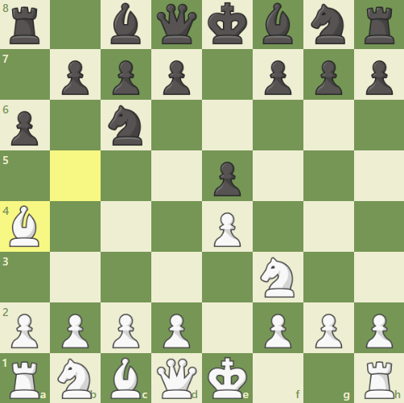

Partia hiszpańska
Partia hiszpańska, znana również jako Ruy Lopez, to jedno z najbardziej klasycznych i popularnych otwarć szachowych, które rozpoczyna się ruchami 1. e4 e5 2. Nf3 Nc6 3. Bb5. Nazwana na cześć hiszpańskiego duchownego Ruy Lópeza de Segura, który opisał ją w swojej książce z 1561 roku, partia hiszpańska jest ceniona za swoją głębię strategiczną i bogactwo możliwości.
W partii hiszpańskiej białe rozwijają gońca na b5, atakując skoczka c6, który wspiera pionka e5. Ten ruch ma na celu wywieranie presji na centrum oraz przygotowanie białych do przeprowadzenia roszady. Po ruchu 3. Bb5 czarne mają kilka głównych opcji kontynuacji, które prowadzą do różnych typów pozycji.
Jednym z najpopularniejszych wariantów jest Obrona Morphy'ego, która zaczyna się od ruchu 3. ... a6. Czarne zmuszają gońca białych do podjęcia decyzji o biciu na c6 lub wycofaniu się na a4. Jeśli goniec wycofa się, czarne często kontynuują rozwój figur, grając 4. ... Nf6 i 5. ... Be7, aby przygotować krótką roszadę.
Innym ważnym wariantem jest Obrona Berlińska, która rozpoczyna się od 3. ... Nf6. Ten wariant stał się niezwykle popularny na najwyższym poziomie po jego sukcesie w Mistrzostwach Świata w Szachach w 2000 roku. Obrona Berlińska prowadzi do solidnych, ale dynamicznych pozycji, często z końcówkami, które wymagają precyzyjnej gry.
Wariant Zamknięty partii hiszpańskiej powstaje po ruchach 3. ... a6 4. Ba4 Nf6 5. O-O Be7. W tej linii obie strony starają się dokończyć rozwój i przygotować do walki o centrum, często prowadząc do skomplikowanych manewrów i głębokich planów strategicznych.
Partia hiszpańska oferuje białym możliwość uzyskania długotrwałej inicjatywy i przewagi pozycyjnej. Dzięki solidnym ruchom i logicznemu planowi rozwoju, białe mogą wywierać ciągłą presję na pozycję czarnych. Czarne, z kolei, mają wiele różnych sposobów na uzyskanie równowagi i kontrataku, co czyni to otwarcie interesującym i pełnym złożonych idei.
Zalety partii hiszpańskiej to jej głębokość teoretyczna, która pozwala na grę zarówno na poziomie amatorskim, jak i profesjonalnym. Otwarcie to jest bardzo elastyczne, dając białym możliwość dostosowania swoich planów w zależności od odpowiedzi przeciwnika. Ponadto, partia hiszpańska oferuje wiele możliwości taktycznych oraz strategicznych, co sprawia, że jest jednym z najczęściej wybieranych otwarć przez najlepszych szachistów na świecie.
Wady partii hiszpańskiej mogą obejmować jej złożoność i konieczność dokładnej znajomości teorii, szczególnie w najgłębszych i najbardziej zbadanych wariantach. Czarne, dobrze przygotowane, mogą znaleźć odpowiednie kontrargumenty i uzyskać równą grę, co może być frustrujące dla białych poszukujących przewagi.
Partia hiszpańska ma bogatą historię i była grana przez wielu mistrzów świata, w tym Bobby'ego Fischera, Garri Kasparowa i Magnusa Carlsena. Jest to otwarcie, które przetrwało próbę czasu, pozostając jednym z fundamentów teorii szachowej i ulubionym wyborem wielu pokoleń szachistów. Dzięki swojej strategicznej głębi i elastyczności, partia hiszpańska nadal jest jednym z najważniejszych narzędzi w arsenale każdego poważnego gracza.
